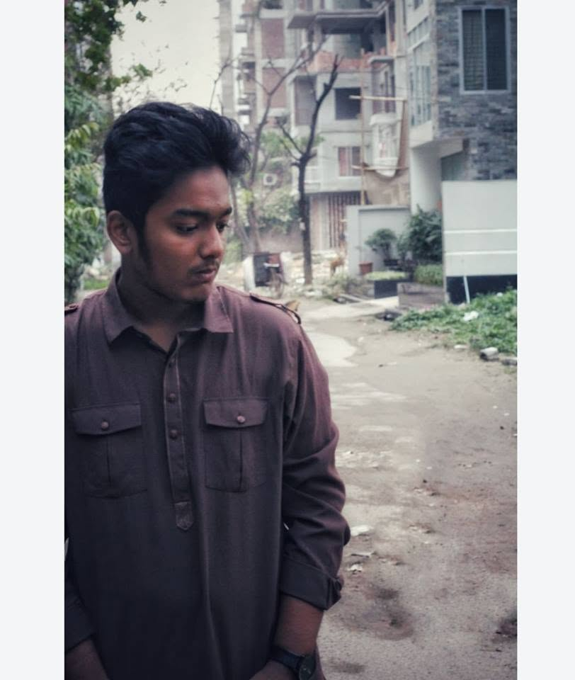

Security Researcher • Systems Programmer • Reverse Engineer
CSE undergrad from Bangladesh. Learning how computers work from the bottom up — with the long-term aim of working on program analysis, fuzzing, and vulnerability research.

I'm a Computer Science & Engineering undergrad from Bangladesh with a deep passion for understanding how computers work from the ground up. My primary interests center around systems programming, reverse engineering, exploit development, and vulnerability research.
I learn best by building things and documenting what I learn — most of my repositories consist of concrete implementations, hands-on lab notes, and deep book notes. My long-term roadmap focuses on program analysis and fuzzing, bridging low-level system internals with automated analysis techniques.
Click any project card to open its repository and source code on GitHub.
A zero-dependency HTTP/1.1 web server and CTF platform written from scratch in C on raw POSIX sockets. Implements a custom state-machine HTTP parser, fork()-based concurrency, embedded SQLite, and strict security hardening against request smuggling and resource exhaustion.
A Linux command-line shell implementing fork-exec process execution, I/O redirection, multi-command pipelines, and process masking. Engineered to master low-level UNIX process management, signals, and descriptor manipulation.
An interactive desktop application built in JavaFX designed to animate complex sorting algorithms and graph traversal paths (BFS, DFS, Dijkstra). Provides step-by-step visual intuition into algorithm dynamics and state mutations.
Finished Linux Luminarium; actively advancing through Computing 101 and Intro to Cybersecurity modules focusing on binary exploitation and memory safety.
Open Platform →Active participant solving security wargames to reinforce command-line proficiency, privilege escalation patterns, and binary analysis fundamentals.
Open Platform →Engaging in security challenges (formerly picoCTF) covering reverse engineering, forensics, cryptography, and web exploitation.
Open Platform →Active & planned security projects. Each will be linked as soon as it is shipped.
AF_PACKET), manual Ethernet/IP/TCP header parsing & packet inspection
Interested in collaborating on systems programming, red teaming, security research, or just discussing low-level tech? Reach out below.